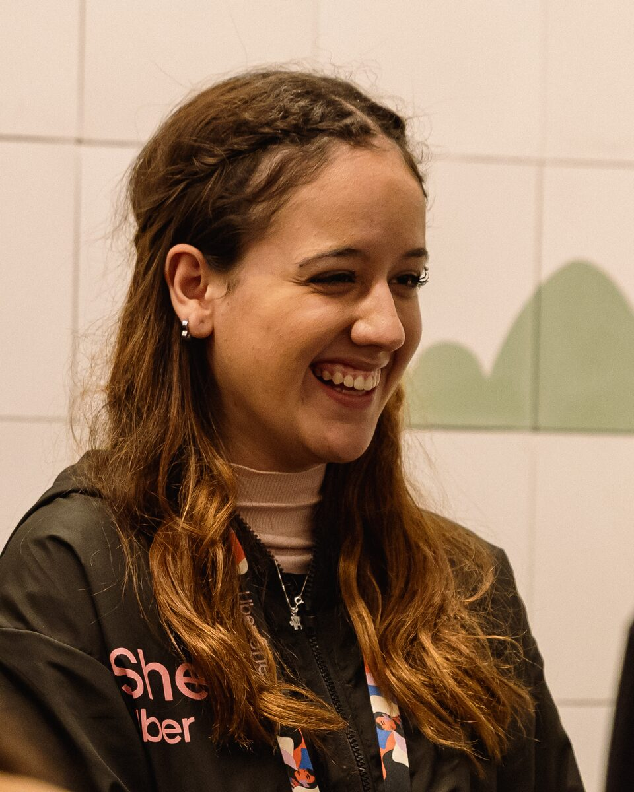

Sobre mim

Sou Maria Heloísa, estudante de Engenharia Aeroespacial e de Engenharia de Dados na Universidade Federal do ABC (UFABC), onde também curso o Bacharelado em Ciência e Tecnologia. Moro em Santo André (SP) e construo uma trajetória interdisciplinar entre engenharia, tecnologia, análise de dados e impacto social.
Sou movida pela busca por conhecimento e inovação. Já atuei em ambientes corporativos como Mercedes-Benz Brasil, Shopper.com.br e Red Bull, e em pesquisa científica: da física de partículas, estudando o bóson W, à investigação da construção social de meninas nas áreas STEAM. Sou proativa e orientada a resultados, com facilidade para liderar, me comunicar e melhorar processos.
Fora da sala de aula, fundei o Instituto Mello, que aproxima jovens de simulações da ONU, aulas de inglês e mentorias, e atuo no TecMeninas ABC levando programação e letramento digital a meninas de escolas públicas. Busco unir conhecimento técnico e colaboração para criar soluções que resolvam problemas concretos e ampliem oportunidades.
O que estou fazendo
-
Engenharia Aeroespacial & de Dados
Cursando os bacharelados em Engenharia Aeroespacial e Engenharia de Dados na UFABC, no período noturno, com formação prevista para 2028.
-
Pesquisa no TecMeninas ABC
Como pesquisadora científica, apoio atividades de programação e letramento digital para estudantes de escolas públicas, incentivando meninas em STEM.
-
Embaixadora Google Gemini
Exploro ferramentas de IA, compartilho boas práticas e incentivo o uso da inteligência artificial na aprendizagem, na produtividade e na resolução de problemas.
-
Estratégia, Dados & Mercado Financeiro
Aprofundo análise de dados, construção de indicadores e gestão de negócios, com formações em finanças pelo Fin4She, Dn'A Women e ESPM.
Destaques
-
1º lugar · IREC 2025
Categoria 10k SRAD Solid, com a equipe Rocket Design UFABC
-
1º lugar · SharkTank
Semana do Produto Itaú Unibanco, proposta destaque em inovação e visão estratégica
-
Menção Honrosa · Yale MUN 2024
Conquistada pela equipe do Instituto Mello, que liderei e orientei como mentora
-
185 meninas
Alcançadas pelo TecMeninas ABC em 2026, em 6 escolas de 3 cidades do Grande ABC
Cursos e Certificações
Tecnologias
 Python
Python C++
C++ MATLAB
MATLAB- Power BI
- Excel
 Azure
Azure Google Cloud
Google Cloud BigQuery
BigQuery- LaTeX
 HTML
HTML CSS
CSS JavaScript
JavaScript Canva
Canva